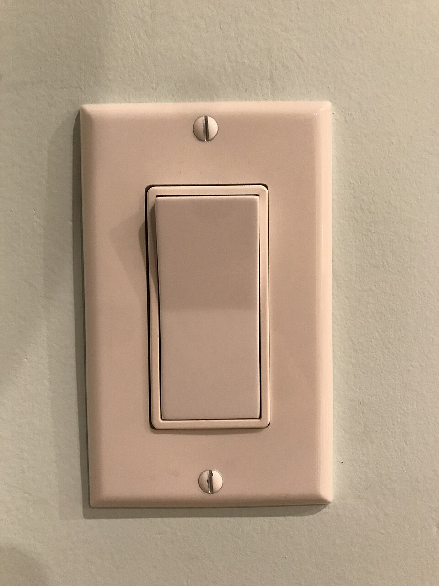

Módulo 03 — Estado con useState
Las props vienen del padre. El estado vive dentro del componente y puede cambiar. Si cambia el estado, React vuelve a renderizar. Esta es la lección donde React deja de ser "HTML con variables" y se vuelve interactivo.
1. ¿Qué es "estado"?

- Props: vienen del padre, son read-only para este componente.
- Estado: vive en este componente, este componente lo modifica.
2. El hook useState
import { useState } from 'react';
function Contador() {
const [count, setCount] = useState(0);
// ↑ ↑ ↑
// valor setter valor inicial
return (
<div>
<p>Click: {count}</p>
<button onClick={() => setCount(count + 1)}>+1</button>
</div>
);
}useState:useState(inicial)devuelve un array de 2 elementos:[valor, setter].- El valor es el estado actual (lo leés normal).
- El setter es una función que actualiza el estado y dispara un re-render.
- El valor inicial solo se usa la PRIMERA vez que el componente se monta.
3. El ciclo: estado → render → evento → setState → re-render
- Mount:
count=0→ React renderiza "Click: 0". - Usuario clickea botón →
setCount(1). - React marca el componente como "necesita re-render".
- React vuelve a llamar
Contador(). - Ahora
count=1→ renderiza "Click: 1". - React compara nuevo árbol con viejo → cambia solo el texto.
4. Las 3 reglas de oro del estado
// ❌ MAL — React no detecta el cambio, no re-renderiza
count = count + 1;
// ✅ BIEN
setCount(count + 1);// ❌ MAL si llamás 3 veces seguidas (resulta count+1, no count+3)
setCount(count + 1);
setCount(count + 1);
setCount(count + 1);
// ✅ BIEN — siempre suma sobre el valor más reciente
setCount(prev => prev + 1);
setCount(prev => prev + 1);
setCount(prev => prev + 1);setCount(5), la variable count sigue valiendo lo viejo en ESTE render.function handler() {
console.log(count); // 0
setCount(5);
console.log(count); // 0 todavía — no es 5
// En el PRÓXIMO render, count valdrá 5
}5. Estado de objetos
Si el estado es un objeto, no podés mutarlo. Tenés que crear uno nuevo:
function FormUsuario() {
const [user, setUser] = useState({ nombre: '', email: '', edad: 0 });
// ❌ MAL — mutación
function actualizar() {
user.nombre = "Ana";
setUser(user); // React no detecta el cambio (mismo objeto referencia)
}
// ✅ BIEN — crear objeto nuevo con spread
function actualizarNombre(nuevoNombre) {
setUser({ ...user, nombre: nuevoNombre });
}
// ✅ BIEN con form-style
function actualizarCampo(campo, valor) {
setUser(prev => ({ ...prev, [campo]: valor }));
}
return (
<input
value={user.nombre}
onChange={(e) => actualizarCampo('nombre', e.target.value)}
/>
);
}6. Estado de arrays
Misma regla: no mutes. Usá métodos que devuelven nuevo array:
| NO usar (muta) | SÍ usar (devuelve nuevo) |
|---|---|
push, pop | [...arr, x] o [x, ...arr] |
splice | filter para quitar |
sort, reverse | [...arr].sort() (copia primero) |
asignar índice (arr[0] = x) | map para reemplazar |
function ListaTareas() {
const [tareas, setTareas] = useState([]);
// Agregar
function agregar(texto) {
setTareas(prev => [...prev, { id: Date.now(), texto, hecha: false }]);
}
// Quitar
function quitar(id) {
setTareas(prev => prev.filter(t => t.id !== id));
}
// Actualizar uno (toggle hecha)
function toggle(id) {
setTareas(prev => prev.map(t =>
t.id === id ? { ...t, hecha: !t.hecha } : t
));
}
return (
<ul>
{tareas.map(t => (
<li key={t.id} onClick={() => toggle(t.id)}>
{t.hecha ? '✓' : '○'} {t.texto}
<button onClick={() => quitar(t.id)}>❌</button>
</li>
))}
</ul>
);
}7. Lazy initialization
Si el valor inicial es caro de calcular, pasale una función a useState. Se ejecuta SOLO la primera vez.
// ❌ Se ejecuta en CADA render (waste)
const [data, setData] = useState(parseHugeJSON());
// ✅ Solo en el mount
const [data, setData] = useState(() => parseHugeJSON());8. Múltiples estados vs un objeto
// Opción A: múltiples useState (preferido si los campos no se actualizan juntos)
function Form() {
const [nombre, setNombre] = useState('');
const [email, setEmail] = useState('');
const [edad, setEdad] = useState(0);
// ...
}
// Opción B: un objeto (preferido si todo se actualiza junto)
function Form() {
const [data, setData] = useState({ nombre: '', email: '', edad: 0 });
// ...
}9. Batching automático (React 18+)
React agrupa varios setState en el mismo handler para hacer UN solo re-render:
function handler() {
setNombre("Ana");
setEdad(30);
setActivo(true);
// → UN solo re-render (no 3)
}Esto es por defecto en React 18+. Antes solo pasaba dentro de event handlers; ahora también en promises, timeouts, async, etc.
10. Levantando estado (lifting state up)
Si dos componentes hermanos necesitan compartir estado, ese estado debe vivir en el padre común:
function Termometro() {
// Estado en el padre
const [temp, setTemp] = useState(20);
return (
<>
<InputCelsius valor={temp} onChange={setTemp} />
<DisplayFahrenheit celsius={temp} />
</>
);
}
function InputCelsius({ valor, onChange }) {
return <input
type="number"
value={valor}
onChange={(e) => onChange(Number(e.target.value))}
/>;
}
function DisplayFahrenheit({ celsius }) {
return <p>{celsius * 9/5 + 32} °F</p>;
}11. Mini-proyecto: contador con historia
function ContadorPro() {
const [count, setCount] = useState(0);
const [history, setHistory] = useState([0]);
function update(delta) {
setCount(prev => {
const next = prev + delta;
setHistory(h => [...h, next]);
return next;
});
}
function reset() {
setCount(0);
setHistory([0]);
}
return (
<div>
<h2>Contador: {count}</h2>
<button onClick={() => update(+1)}>+1</button>
<button onClick={() => update(-1)}>-1</button>
<button onClick={reset}>Reset</button>
<p>Historia: {history.join(' → ')}</p>
</div>
);
}12. Errores típicos
tareas.push(x); setTareas(tareas) NO funciona — React compara referencias. Usá setTareas([...tareas, x]).setCount(5); console.log(count) → loguea el VIEJO. El nuevo valor está en el próximo render.const [x, setX] = useState(0) en módulo raíz = error.if: rompe la "regla de los hooks". Los hooks SIEMPRE se llaman en el mismo orden.useState(props.valor) ignora cambios futuros de props.valor. Si querés sincronizar, usá useEffect (M06) o derivá el valor (no lo guardes en estado).total = price * quantity), no lo guardes en useState — calculalo en cada render.13. Ejercicios
- Toggle: botón que alterna entre "Mostrar" y "Ocultar" un párrafo.
- Input controlado: input + h2 que muestra en vivo lo que escribís.
- Lista de tareas: agregar (con Enter), tachar al click, borrar.
- Contador con límite: no puede pasar de 10 ni bajar de 0.
- Picker de colores: 3 inputs (R, G, B) que actualizan un div con ese color.
- "Compra inteligente": carrito con productos, total derivado (no guardado en estado).
✅ Checkpoint
1. ¿Qué devuelve useState(0)?
Un array de 2 elementos: [valor, setter]. El primero es el estado actual, el segundo es una función para actualizarlo. Se destructura normalmente: const [count, setCount] = useState(0).
2. ¿Cuándo usar setCount(prev => prev + 1) en lugar de setCount(count + 1)?
Cuando el nuevo valor depende del anterior Y podés tener múltiples updates en sucesión rápida. La forma con función SIEMPRE recibe el valor más reciente del estado, evitando bugs por batching o async.
3. ¿Por qué no podés mutar el estado directamente?
React compara la REFERENCIA del estado nuevo vs viejo para decidir si re-renderizar. Mutar (arr.push(x)) no cambia la referencia → React cree que nada cambió → no re-renderiza. Hay que crear nuevo array/objeto siempre.
4. ¿Qué es lifting state up?
Mover el estado al ancestro común de los componentes que lo necesitan. Si 2 hermanos lo usan, va al padre; el padre lo pasa como prop a ambos. Permite que React sea la fuente única de verdad.
5. ¿Cuándo conviene calcular un valor vs guardarlo en estado?
Si podés DERIVARLO de otro estado (total = sum(items)), calculalo en cada render — no lo guardes. Guardar duplicados de estado lleva a bugs de sincronización. Solo guardás lo "fuente de verdad".
6. ¿Qué es lazy initialization de useState?
Pasar una función en lugar de un valor: useState(() => calculoCaro()). La función se ejecuta SOLO la primera vez (mount). Útil cuando el valor inicial es caro y no querés recalcularlo en cada render.
🧠 Autoevaluación rápida
Respondé sin mirar arriba. Cada pregunta te explica el porqué.
1. Con count valiendo 0, llamás setCount(count + 1) tres veces seguidas en el mismo handler. ¿Cuánto vale count en el próximo render?
count congelado de este render (0), así que las tres piden exactamente lo mismo: 1. Para sumar de a uno sobre el valor más reciente va la forma función: setCount(prev => prev + 1).2. ¿Por qué tareas.push(nueva); setTareas(tareas) no re-renderiza nada?
setTareas([...tareas, nueva]). Misma idea para el resto: filter para quitar, map para reemplazar, [...arr].sort() para ordenar.3. Tenés precio y cantidad en estado y necesitás mostrar el total. ¿Qué conviene?
useState solo va la fuente de verdad.